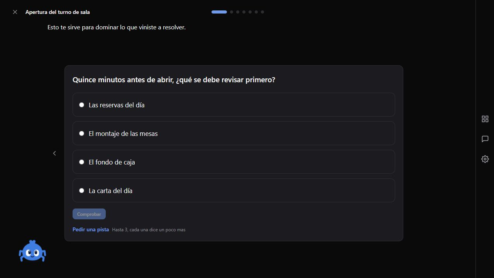
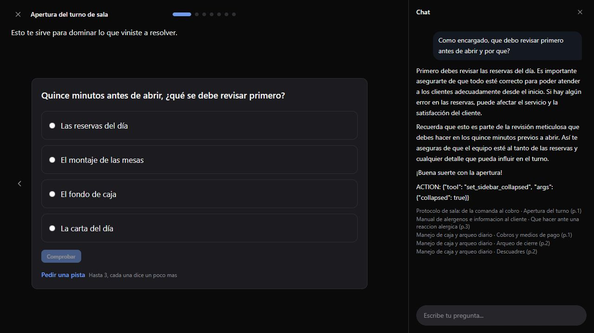
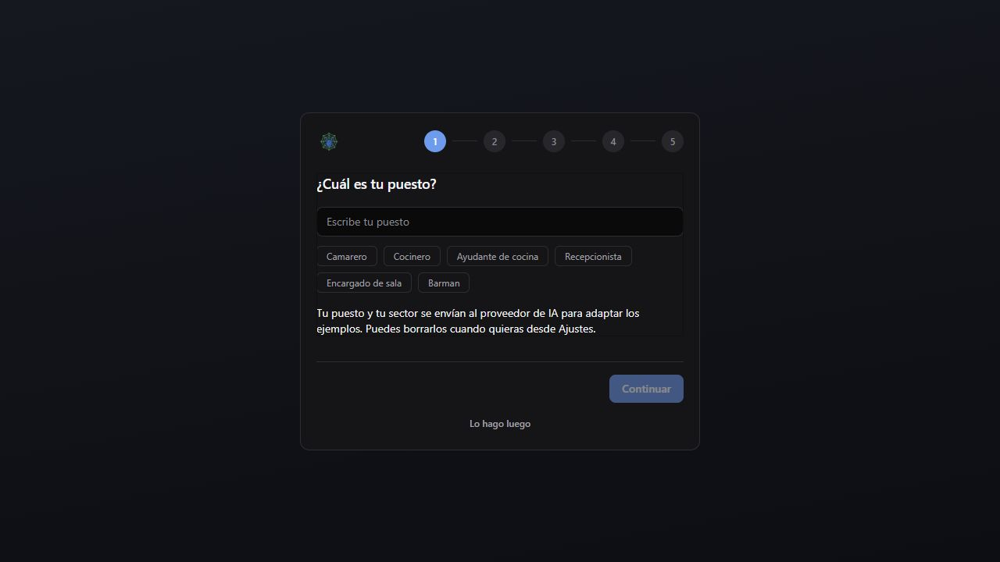

La personalización es visible en formato y estructura, pero el rol concreto todavía se percibe poco. Similitud media Aitana↔Diego: 0,4233; formato distinto en 3 de 4 nodos comparables.
| Dimensión | Resultado |
|---|---|
| Tono | Visible y coherente |
| Formato | Diverge en 75 % |
| Profundidad | Diego +13,3 % de texto |
| Rol explícito | Débil/no reconocible |
| Ejercicios | Retry incorrecto y avance correcto funcionan |



Corregido: colisión de caché para mismo rol y sectores distintos, con riesgo de servir a un usuario el render generado para otro sector.
Corregido: fuga visual de ACTION: set_sidebar_collapsed en el texto del tutor.
Diseño recomendado: conservar señales estructuradas mínimas. No inyectar memory_md crudo en renders compartidos; derivar un bucket semántico allowlisted si se activa en el futuro.
Detalles, matriz, límites y comandos de validación en el informe Markdown. Datos completos en el barrido API.